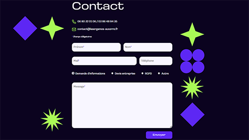

Retour
Megazone
d'Auxerre
Combiner les ressources liées au développement web, au design d'expérience et à la gestion de projet et vous obtenez… le site refondu du Megazone d'Auxerre !

Voilà un projet réalisé durant ma 2e année à l'IUT. Au bout des 15 jours de travail, étaient produits une analyse de l'existant, un prototype interactif sur Figma, un site réalisé avec du JavaScript, du SCSS et Symfony, accessible, éco-conçu et ergonomique avec une UX travaillée. Nous avons redéfini l'identité visuelle en accords avec nos personae et entièrement repensé l'arborescence du site.

Pour ce projet, j'ai été sur plusieurs fronts.
- J'ai mis en place le repository sur Github pour une collaboration simplifiée.
- J'ai réalisé le logo et le favicon sur Illustrator.
- J'ai beaucoup aidé au maquettage des 4 pages imposées : l'accueil, la page contact, la page des formules et la page d'escape game.
- J'ai codé la page contact et mis en production le site sur mon VPS.